Explore Our Collection
Classics Literature
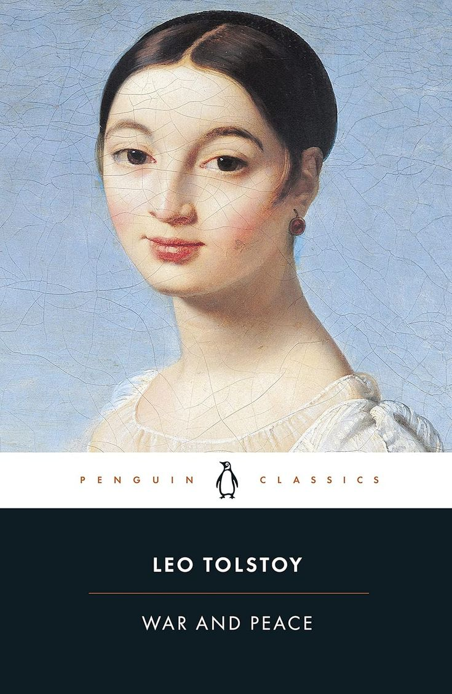
War and Peace

1984
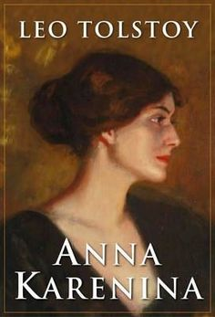
Anna Karenina
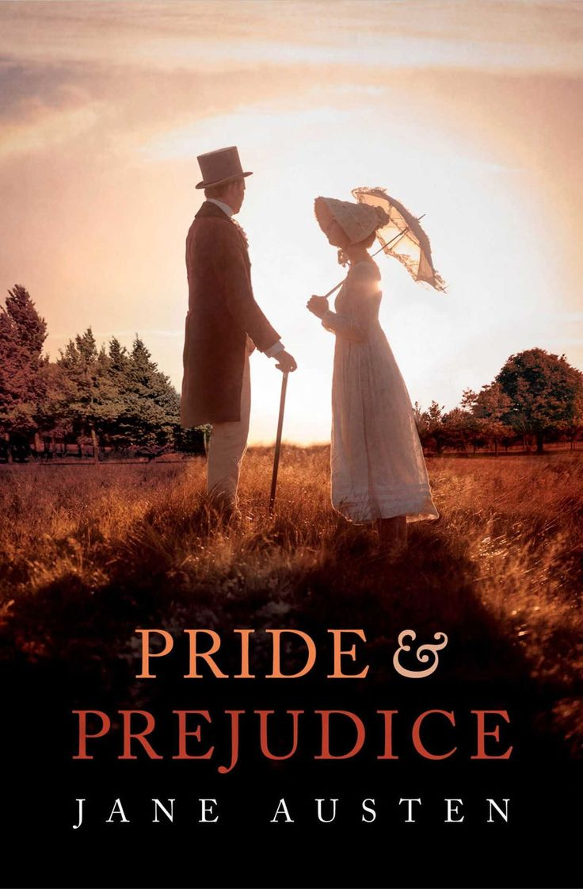
Pride and Prejudice
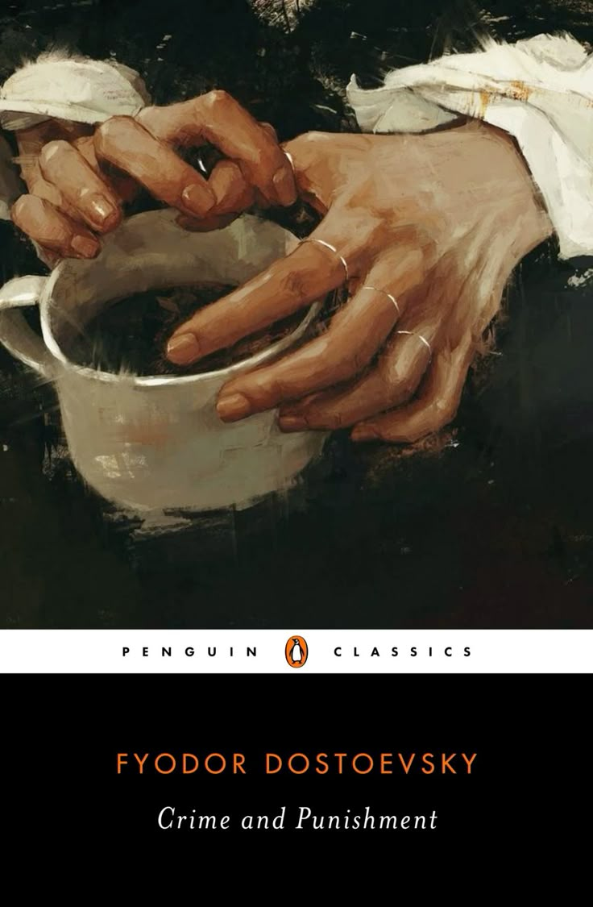
Crime and Punishment
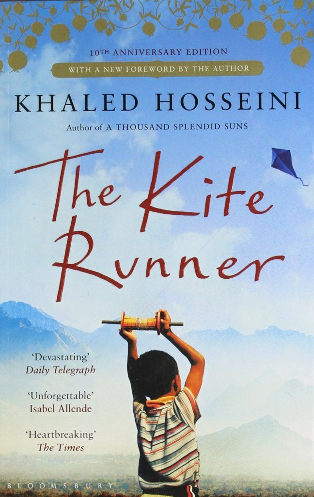
The Kite Runner
The Stranger
Fiction Books

The Silent Patient
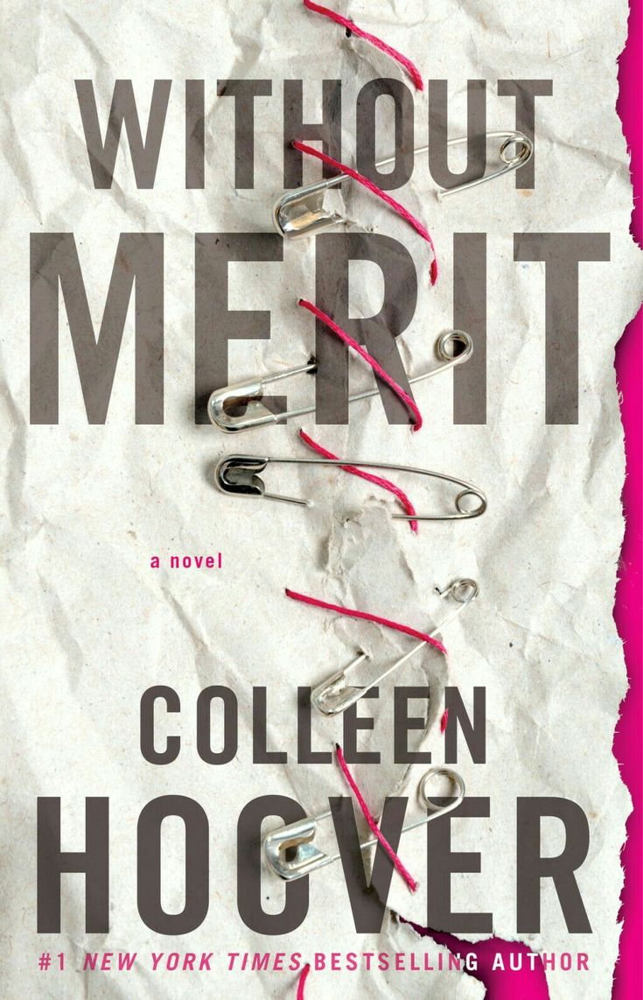
without Merit
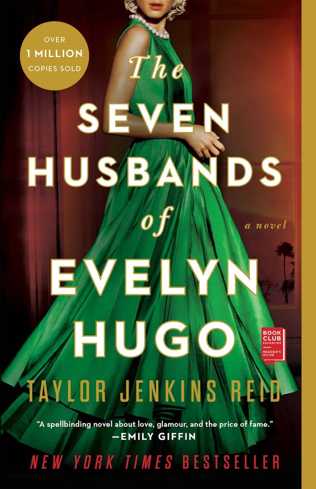
The Seven Husbands of Evelyn Hugo
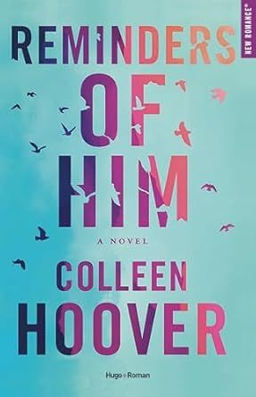
Reminders Of Him
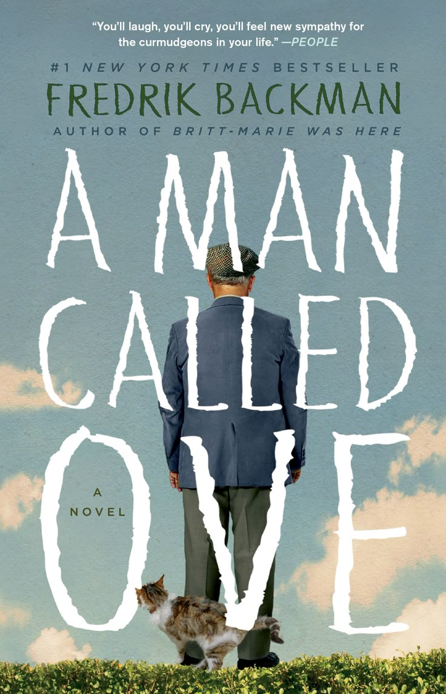
A Man Called Ove
Self-Development
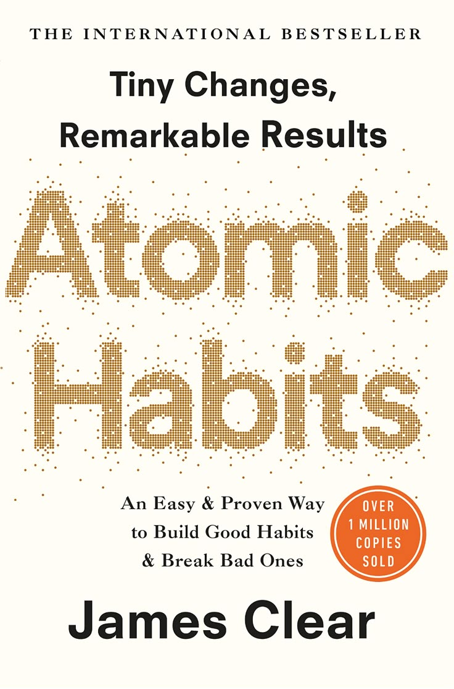
Atomic Habits
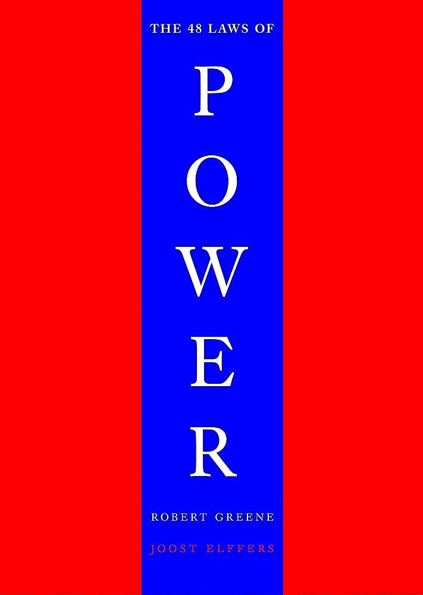
The 48 Laws of Power
Becoming
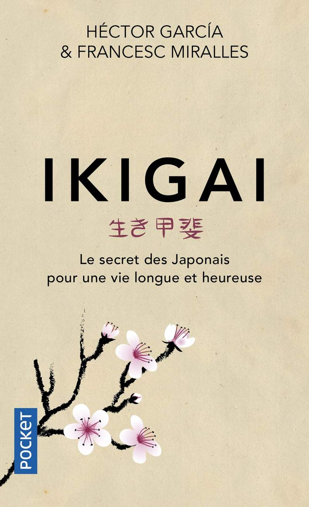
Ikigai
Arabic Books
أولاد حارتنا
إيكادولي
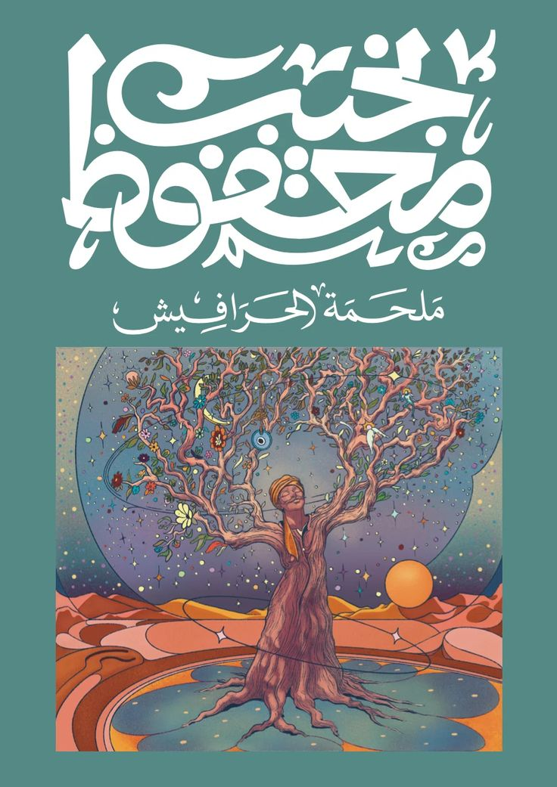